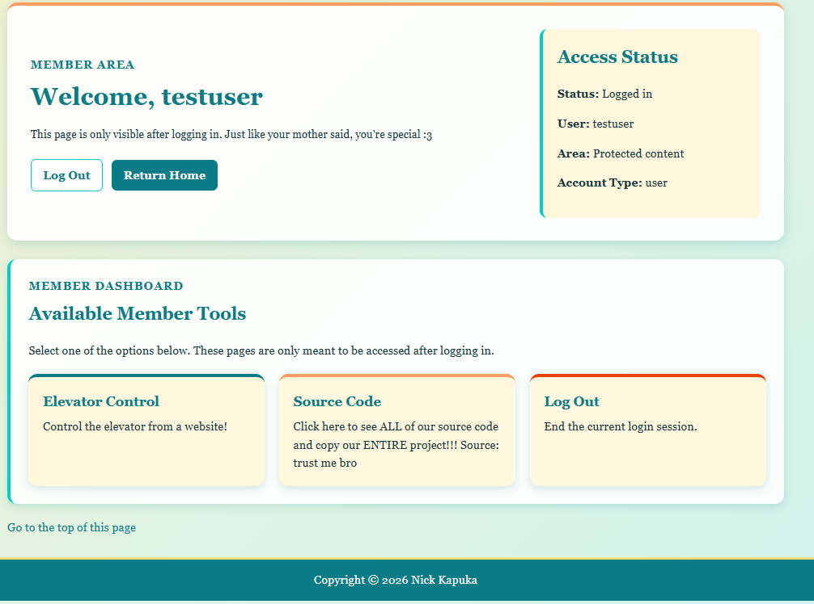

Additionally, I added functionality to members.php, the main members homepage to only show admin-allowed pages if the user that is logged in is an admin. The code is a simple if statement,
Members page while logged in with an administrator account
Non-admin account:

Members page while logged in with a non-administrator account
SQL Issues
Throughout writing my code, I went home to work there since the college closed, but my SQL ran into an issue. At first it was just this block in the XAMPP saying SQL failed to boot:
12:59:09 PM [mysql] Error: MySQL shutdown unexpectedly.
12:59:09 PM [mysql] This may be due to a blocked port, missing dependencies,
12:59:09 PM [mysql] improper privileges, a crash, or a shutdown by another method.
12:59:09 PM [mysql] Press the Logs button to view error logs and check
12:59:09 PM [mysql] the Windows Event Viewer for more clues
12:59:09 PM [mysql] If you need more help, copy and post this
12:59:09 PM [mysql] entire log window on the forums
From here, I checked the log of the MariaDB service by clicking "logs" in XAMPP which gave a large file. Only the most recent entries were relevant though:
2026-07-18 12:54:21 0 [Note] mysqld.exe: Aria engine: starting recovery
recovered pages: 0% 17% 46% 63% 100% (0.0 seconds); tables to flush: 1 0
(0.0 seconds);
2026-07-18 12:54:21 0 [Note] mysqld.exe: Aria engine: recovery done
2026-07-18 12:54:21 0 [Note] InnoDB: Mutexes and rw_locks use Windows interlocked functions
2026-07-18 12:54:21 0 [Note] InnoDB: Uses event mutexes
2026-07-18 12:54:21 0 [Note] InnoDB: Compressed tables use zlib 1.3
2026-07-18 12:54:21 0 [Note] InnoDB: Number of pools: 1
2026-07-18 12:54:21 0 [Note] InnoDB: Using SSE2 crc32 instructions
2026-07-18 12:54:21 0 [Note] InnoDB: Initializing buffer pool, total size = 16M, instances = 1, chunk size = 16M
2026-07-18 12:54:21 0 [Note] InnoDB: Completed initialization of buffer pool
2026-07-18 12:54:21 0 [Note] InnoDB: Starting crash recovery from checkpoint LSN=595577
2026-07-18 12:54:22 0 [Note] InnoDB: 128 out of 128 rollback segments are active.
2026-07-18 12:54:22 0 [Note] InnoDB: Removed temporary tablespace data file: "ibtmp1"
2026-07-18 12:54:22 0 [Note] InnoDB: Creating shared tablespace for temporary tables
2026-07-18 12:54:22 0 [Note] InnoDB: Setting file 'C:\xampp\mysql\data\ibtmp1' size to 12 MB. Physically writing the file full; Please wait ...
2026-07-18 12:54:22 0 [Note] InnoDB: File 'C:\xampp\mysql\data\ibtmp1' size is now 12 MB.
2026-07-18 12:54:22 0 [Note] InnoDB: Waiting for purge to start
2026-07-18 12:54:22 0 [Note] InnoDB: 10.4.32 started; log sequence number 595586; transaction id 754
2026-07-18 12:54:22 0 [Note] InnoDB: Loading buffer pool(s) from C:\xampp\mysql\data\ib_buffer_pool
2026-07-18 12:54:22 0 [Note] Plugin 'FEEDBACK' is disabled.
2026-07-18 12:54:22 0 [Note] InnoDB: Buffer pool(s) load completed at 260718 12:54:22
2026-07-18 12:54:22 0 [Note] Server socket created on IP: '::'.
2026-07-18 12:58:31 0 [Note] Starting MariaDB 10.4.32-MariaDB source revision c4143f909528e3fab0677a28631d10389354c491 as process 41620
2026-07-18 12:58:31 0 [Note] InnoDB: Mutexes and rw_locks use Windows interlocked functions
2026-07-18 12:58:31 0 [Note] InnoDB: Uses event mutexes
2026-07-18 12:58:31 0 [Note] InnoDB: Compressed tables use zlib 1.3
2026-07-18 12:58:31 0 [Note] InnoDB: Number of pools: 1
2026-07-18 12:58:31 0 [Note] InnoDB: Using SSE2 crc32 instructions
2026-07-18 12:58:31 0 [Note] InnoDB: Initializing buffer pool, total size = 16M, instances = 1, chunk size = 16M
2026-07-18 12:58:31 0 [Note] InnoDB: Completed initialization of buffer pool
2026-07-18 12:58:31 0 [Note] InnoDB: 128 out of 128 rollback segments are active.
2026-07-18 12:58:31 0 [Note] InnoDB: Creating shared tablespace for temporary tables
2026-07-18 12:58:31 0 [Note] InnoDB: Setting file 'C:\xampp\mysql\data\ibtmp1' size to 12 MB. Physically writing the file full; Please wait ...
2026-07-18 12:58:31 0 [Note] InnoDB: File 'C:\xampp\mysql\data\ibtmp1' size is now 12 MB.
2026-07-18 12:58:31 0 [Note] InnoDB: Waiting for purge to start
2026-07-18 12:58:32 0 [Note] InnoDB: 10.4.32 started; log sequence number 595595; transaction id 754
2026-07-18 12:58:32 0 [Note] InnoDB: Loading buffer pool(s) from C:\xampp\mysql\data\ib_buffer_pool
2026-07-18 12:58:32 0 [Note] Plugin 'FEEDBACK' is disabled.
2026-07-18 12:58:32 0 [Note] InnoDB: Buffer pool(s) load completed at 260718 12:58:32
2026-07-18 12:58:32 0 [Note] Server socket created on IP: '::'.
2026-07-18 12:58:39 0 [Note] Starting MariaDB 10.4.32-MariaDB source revision c4143f909528e3fab0677a28631d10389354c491 as process 28268
2026-07-18 12:58:39 0 [Note] InnoDB: Mutexes and rw_locks use Windows interlocked functions
2026-07-18 12:58:39 0 [Note] InnoDB: Uses event mutexes
2026-07-18 12:58:39 0 [Note] InnoDB: Compressed tables use zlib 1.3
2026-07-18 12:58:39 0 [Note] InnoDB: Number of pools: 1
2026-07-18 12:58:39 0 [Note] InnoDB: Using SSE2 crc32 instructions
2026-07-18 12:58:39 0 [Note] InnoDB: Initializing buffer pool, total size = 16M, instances = 1, chunk size = 16M
2026-07-18 12:58:39 0 [Note] InnoDB: Completed initialization of buffer pool
2026-07-18 12:58:39 0 [Note] InnoDB: 128 out of 128 rollback segments are active.
2026-07-18 12:58:39 0 [Note] InnoDB: Removed temporary tablespace data file: "ibtmp1"
2026-07-18 12:58:39 0 [Note] InnoDB: Creating shared tablespace for temporary tables
2026-07-18 12:58:39 0 [Note] InnoDB: Setting file 'C:\xampp\mysql\data\ibtmp1' size to 12 MB. Physically writing the file full; Please wait ...
2026-07-18 12:58:39 0 [Note] InnoDB: File 'C:\xampp\mysql\data\ibtmp1' size is now 12 MB.
2026-07-18 12:58:39 0 [Note] InnoDB: Waiting for purge to start
2026-07-18 12:58:39 0 [Note] InnoDB: 10.4.32 started; log sequence number 595595; transaction id 754
2026-07-18 12:58:39 0 [Note] InnoDB: Loading buffer pool(s) from C:\xampp\mysql\data\ib_buffer_pool
2026-07-18 12:58:39 0 [Note] Plugin 'FEEDBACK' is disabled.
2026-07-18 12:58:39 0 [Note] Server socket created on IP: '::'.
2026-07-18 12:58:59 0 [Note] Starting MariaDB 10.4.32-MariaDB source revision c4143f909528e3fab0677a28631d10389354c491 as process 34428
2026-07-18 12:58:59 0 [Note] InnoDB: Mutexes and rw_locks use Windows interlocked functions
2026-07-18 12:58:59 0 [Note] InnoDB: Uses event mutexes
2026-07-18 12:58:59 0 [Note] InnoDB: Compressed tables use zlib 1.3
2026-07-18 12:58:59 0 [Note] InnoDB: Number of pools: 1
2026-07-18 12:58:59 0 [Note] InnoDB: Using SSE2 crc32 instructions
2026-07-18 12:58:59 0 [Note] InnoDB: Initializing buffer pool, total size = 16M, instances = 1, chunk size = 16M
2026-07-18 12:58:59 0 [Note] InnoDB: Completed initialization of buffer pool
2026-07-18 12:58:59 0 [Note] InnoDB: 128 out of 128 rollback segments are active.
2026-07-18 12:58:59 0 [Note] InnoDB: Creating shared tablespace for temporary tables
2026-07-18 12:58:59 0 [Note] InnoDB: Setting file 'C:\xampp\mysql\data\ibtmp1' size to 12 MB. Physically writing the file full; Please wait ...
2026-07-18 12:58:59 0 [Note] InnoDB: File 'C:\xampp\mysql\data\ibtmp1' size is now 12 MB.
2026-07-18 12:58:59 0 [Note] InnoDB: Waiting for purge to start
2026-07-18 12:58:59 0 [Note] InnoDB: 10.4.32 started; log sequence number 595604; transaction id 754
2026-07-18 12:58:59 0 [Note] InnoDB: Loading buffer pool(s) from C:\xampp\mysql\data\ib_buffer_pool
2026-07-18 12:58:59 0 [Note] Plugin 'FEEDBACK' is disabled.
2026-07-18 12:58:59 0 [Note] Server socket created on IP: '::'.
2026-07-18 12:59:08 0 [Note] Starting MariaDB 10.4.32-MariaDB source revision c4143f909528e3fab0677a28631d10389354c491 as process 26640
2026-07-18 12:59:08 0 [Note] InnoDB: Mutexes and rw_locks use Windows interlocked functions
2026-07-18 12:59:08 0 [Note] InnoDB: Uses event mutexes
2026-07-18 12:59:08 0 [Note] InnoDB: Compressed tables use zlib 1.3
2026-07-18 12:59:08 0 [Note] InnoDB: Number of pools: 1
2026-07-18 12:59:08 0 [Note] InnoDB: Using SSE2 crc32 instructions
2026-07-18 12:59:08 0 [Note] InnoDB: Initializing buffer pool, total size = 16M, instances = 1, chunk size = 16M
2026-07-18 12:59:08 0 [Note] InnoDB: Completed initialization of buffer pool
2026-07-18 12:59:08 0 [Note] InnoDB: 128 out of 128 rollback segments are active.
2026-07-18 12:59:08 0 [Note] InnoDB: Creating shared tablespace for temporary tables
2026-07-18 12:59:08 0 [Note] InnoDB: Setting file 'C:\xampp\mysql\data\ibtmp1' size to 12 MB. Physically writing the file full; Please wait ...
2026-07-18 12:59:08 0 [Note] InnoDB: File 'C:\xampp\mysql\data\ibtmp1' size is now 12 MB.
2026-07-18 12:59:08 0 [Note] InnoDB: Waiting for purge to start
2026-07-18 12:59:08 0 [Note] InnoDB: 10.4.32 started; log sequence number 595613; transaction id 754
2026-07-18 12:59:08 0 [Note] InnoDB: Loading buffer pool(s) from C:\xampp\mysql\data\ib_buffer_pool
2026-07-18 12:59:08 0 [Note] Plugin 'FEEDBACK' is disabled.
2026-07-18 12:59:08 0 [Note] Server socket created on IP: '::'.
2026-07-18 13:00:13 0 [Note] Starting MariaDB 10.4.32-MariaDB source revision c4143f909528e3fab0677a28631d10389354c491 as process 39660
2026-07-18 13:00:13 0 [Note] InnoDB: Mutexes and rw_locks use Windows interlocked functions
2026-07-18 13:00:13 0 [Note] InnoDB: Uses event mutexes
2026-07-18 13:00:13 0 [Note] InnoDB: Compressed tables use zlib 1.3
2026-07-18 13:00:13 0 [Note] InnoDB: Number of pools: 1
2026-07-18 13:00:13 0 [Note] InnoDB: Using SSE2 crc32 instructions
2026-07-18 13:00:13 0 [Note] InnoDB: Initializing buffer pool, total size = 16M, instances = 1, chunk size = 16M
2026-07-18 13:00:13 0 [Note] InnoDB: Completed initialization of buffer pool
2026-07-18 13:00:13 0 [Note] InnoDB: 128 out of 128 rollback segments are active.
2026-07-18 13:00:13 0 [Note] InnoDB: Creating shared tablespace for temporary tables
2026-07-18 13:00:13 0 [Note] InnoDB: Setting file 'C:\xampp\mysql\data\ibtmp1' size to 12 MB. Physically writing the file full; Please wait ...
2026-07-18 13:00:13 0 [Note] InnoDB: File 'C:\xampp\mysql\data\ibtmp1' size is now 12 MB.
2026-07-18 13:00:13 0 [Note] InnoDB: Waiting for purge to start
2026-07-18 13:00:13 0 [Note] InnoDB: 10.4.32 started; log sequence number 595622; transaction id 754
2026-07-18 13:00:13 0 [Note] InnoDB: Loading buffer pool(s) from C:\xampp\mysql\data\ib_buffer_pool
2026-07-18 13:00:13 0 [Note] Plugin 'FEEDBACK' is disabled.
2026-07-18 13:00:13 0 [Note] Server socket created on IP: '::'.
2026-07-18 13:00:17 0 [Note] Starting MariaDB 10.4.32-MariaDB source revision c4143f909528e3fab0677a28631d10389354c491 as process 22780
2026-07-18 13:00:17 0 [Note] InnoDB: Mutexes and rw_locks use Windows interlocked functions
2026-07-18 13:00:17 0 [Note] InnoDB: Uses event mutexes
2026-07-18 13:00:17 0 [Note] InnoDB: Compressed tables use zlib 1.3
2026-07-18 13:00:17 0 [Note] InnoDB: Number of pools: 1
2026-07-18 13:00:17 0 [Note] InnoDB: Using SSE2 crc32 instructions
2026-07-18 13:00:17 0 [Note] InnoDB: Initializing buffer pool, total size = 16M, instances = 1, chunk size = 16M
2026-07-18 13:00:17 0 [Note] InnoDB: Completed initialization of buffer pool
2026-07-18 13:00:17 0 [Note] InnoDB: 128 out of 128 rollback segments are active.
2026-07-18 13:00:17 0 [Note] InnoDB: Removed temporary tablespace data file: "ibtmp1"
2026-07-18 13:00:17 0 [Note] InnoDB: Creating shared tablespace for temporary tables
2026-07-18 13:00:17 0 [Note] InnoDB: Setting file 'C:\xampp\mysql\data\ibtmp1' size to 12 MB. Physically writing the file full; Please wait ...
2026-07-18 13:00:17 0 [Note] InnoDB: File 'C:\xampp\mysql\data\ibtmp1' size is now 12 MB.
2026-07-18 13:00:17 0 [Note] InnoDB: Waiting for purge to start
2026-07-18 13:00:18 0 [Note] InnoDB: 10.4.32 started; log sequence number 595622; transaction id 754
2026-07-18 13:00:18 0 [Note] InnoDB: Loading buffer pool(s) from C:\xampp\mysql\data\ib_buffer_pool
2026-07-18 13:00:18 0 [Note] Plugin 'FEEDBACK' is disabled.
2026-07-18 13:00:18 0 [Note] Server socket created on IP: '::'.
The good part is this:
mysqld.exe: Aria engine: recovery done
InnoDB: 10.4.32 started Server socket created
This means that the DB's made are at least safe.
Next, I figured it might be a port issue so I checked if the port SQL wanted is being used:
Copyright (C) Microsoft Corporation. All rights reserved.
PS C:\Windows\system32> netstat -ano | findstr :3306
PS C:\Windows\system32>
But that didn't return anything, which means that it's not being used - good.
Another good check was if the mariaDB process was running but not showing up in SQL:
But this again did not return anything, meaning this process isn't running elsewhere. Since I was pretty lost from here, I consulted ChatGPT which gave me the following commands:
cd C:\xampp\mysql\bin
.\mysqld.exe --defaults-file="C:\xampp\mysql\bin\my.ini" --console
This runs the MariaDB executable and tells XAMPP to use MariaDB specifically. --console prints any startup error. It gave me the following:
2026-07-18 13:02:46 0 [Note] Using unique option prefix 'key_buffer' is error-prone and can break in the future. Please use the full name 'key_buffer_size' instead.
2026-07-18 13:02:46 0 [Note] Starting MariaDB 10.4.32-MariaDB source revision c4143f909528e3fab0677a28631d10389354c491 as process 32372
2026-07-18 13:02:46 0 [Note] InnoDB: Mutexes and rw_locks use Windows interlocked functions
2026-07-18 13:02:46 0 [Note] InnoDB: Uses event mutexes
2026-07-18 13:02:46 0 [Note] InnoDB: Compressed tables use zlib 1.3
2026-07-18 13:02:46 0 [Note] InnoDB: Number of pools: 1
2026-07-18 13:02:46 0 [Note] InnoDB: Using SSE2 crc32 instructions
2026-07-18 13:02:46 0 [Note] InnoDB: Initializing buffer pool, total size = 16M, instances = 1, chunk size = 16M
2026-07-18 13:02:46 0 [Note] InnoDB: Completed initialization of buffer pool
2026-07-18 13:02:46 0 [Note] InnoDB: 128 out of 128 rollback segments are active.
2026-07-18 13:02:46 0 [Note] InnoDB: Creating shared tablespace for temporary tables
2026-07-18 13:02:46 0 [Note] InnoDB: Setting file 'C:\xampp\mysql\data\ibtmp1' size to 12 MB. Physically writing the file full; Please wait ...
2026-07-18 13:02:46 0 [Note] InnoDB: File 'C:\xampp\mysql\data\ibtmp1' size is now 12 MB.
2026-07-18 13:02:46 0 [Note] InnoDB: Waiting for purge to start
2026-07-18 13:02:46 0 [Note] InnoDB: 10.4.32 started; log sequence number 595631; transaction id 754
2026-07-18 13:02:46 0 [Note] InnoDB: Loading buffer pool(s) from C:\xampp\mysql\data\ib_buffer_pool
2026-07-18 13:02:46 0 [Note] Plugin 'FEEDBACK' is disabled.
2026-07-18 13:02:46 0 [Note] Server socket created on IP: '::'.
2026-07-18 13:02:46 0 [ERROR] mysqld.exe: Index for table '.\mysql\db' is corrupt; try to repair it
2026-07-18 13:02:46 0 [ERROR] Fatal error: Can't open and lock privilege tables: Index for table '.\mysql\db' is corrupt; try to repair it
2026-07-18 13:02:46 0 [ERROR] Aborting
PS C:\xampp\mysql\bin>
There's the problem:
2026-07-18 13:02:46 0 [ERROR] mysqld.exe: Index for table '.\mysql\db' is corrupt; try to repair it
From here, I copied the databases and backed them up:
PS C:\xampp\mysql\bin> .\aria_chk.exe --check "C:\xampp\mysql\data\mysql\db.MAI"
C:\xampp\mysql\bin\aria_chk.exe: Got error 'Can't find file' when trying to use aria control file '.\aria_log_control'
C:\xampp\mysql\bin\aria_chk.exe: Index is corrupted
aria_chk.exe: error: 'C:\xampp\mysql\data\mysql\db.MAI' doesn't have a correct index definition. You need to recreate it before you can do a repair
The .\arioa_chk.exe actually lives in the data folder, which I missed... So using ls:
PS C:\xampp\mysql> ls
Directory: C:\xampp\mysql
Mode LastWriteTime Length Name
---- ------------- ------ ----
d----- 2026-06-19 5:22 AM backup
d----- 2026-06-19 5:28 AM bin
d----- 2026-07-18 1:02 PM data
d----- 2026-07-18 1:20 PM data_backup_2026-07-18
d----- 2026-06-19 5:21 AM scripts
d----- 2026-06-19 5:22 AM share
-a---- 2023-10-30 8:36 AM 17987 COPYING
-a---- 2023-10-30 8:36 AM 2104 CREDITS
-a---- 2013-03-30 8:29 AM 848 mysql_installservice.bat
-a---- 2013-03-30 8:29 AM 395 mysql_uninstallservice.bat
-a---- 2023-10-30 8:36 AM 2874 README.md
-a---- 2019-06-03 7:39 AM 1095 resetroot.bat
-a---- 2023-10-30 8:36 AM 86263 THIRDPARTY
PS C:\xampp\mysql> cd data
PS C:\xampp\mysql\data>
We can navigate to the data folder and run the command once more:
PS C:\xampp\mysql\data\mysql> cd ..
PS C:\xampp\mysql\data> ..\bin\aria_chk.exe --check ".\mysql\db.MAI"
C:\xampp\mysql\bin\aria_chk.exe: Index is corrupted
aria_chk.exe: error: '.\mysql\db.MAI' doesn't have a correct index definition. You need to recreate it before you can do a repair
PS C:\xampp\mysql\data>
From here, another command was ran:
PS C:\xampp\mysql\data> cd C:\xampp\mysql\bin
PS C:\xampp\mysql\bin>
PS C:\xampp\mysql\bin> .\mysqld.exe `
>> --defaults-file="C:\xampp\mysql\bin\my.ini" `
>> --skip-grant-tables `
>> --bind-address=127.0.0.1 `
>> --console
2026-07-18 13:26:58 0 [Note] Using unique option prefix 'key_buffer' is error-prone and can break in the future. Please use the full name 'key_buffer_size' instead.
2026-07-18 13:26:58 0 [Note] Starting MariaDB 10.4.32-MariaDB source revision c4143f909528e3fab0677a28631d10389354c491 as process 13992
2026-07-18 13:26:58 0 [Note] InnoDB: Mutexes and rw_locks use Windows interlocked functions
2026-07-18 13:26:58 0 [Note] InnoDB: Uses event mutexes
2026-07-18 13:26:58 0 [Note] InnoDB: Compressed tables use zlib 1.3
2026-07-18 13:26:58 0 [Note] InnoDB: Number of pools: 1
2026-07-18 13:26:58 0 [Note] InnoDB: Using SSE2 crc32 instructions
2026-07-18 13:26:58 0 [Note] InnoDB: Initializing buffer pool, total size = 16M, instances = 1, chunk size = 16M
2026-07-18 13:26:58 0 [Note] InnoDB: Completed initialization of buffer pool
2026-07-18 13:26:58 0 [Note] InnoDB: 128 out of 128 rollback segments are active.
2026-07-18 13:26:58 0 [Note] InnoDB: Creating shared tablespace for temporary tables
2026-07-18 13:26:58 0 [Note] InnoDB: Setting file 'C:\xampp\mysql\data\ibtmp1' size to 12 MB. Physically writing the file full; Please wait ...
2026-07-18 13:26:58 0 [Note] InnoDB: File 'C:\xampp\mysql\data\ibtmp1' size is now 12 MB.
2026-07-18 13:26:58 0 [Note] InnoDB: Waiting for purge to start
2026-07-18 13:26:58 0 [Note] InnoDB: 10.4.32 started; log sequence number 595640; transaction id 754
2026-07-18 13:26:58 0 [Note] InnoDB: Loading buffer pool(s) from C:\xampp\mysql\data\ib_buffer_pool
2026-07-18 13:26:58 0 [Note] Plugin 'FEEDBACK' is disabled.
2026-07-18 13:26:58 0 [Note] Server socket created on IP: '127.0.0.1'.
2026-07-18 13:26:58 0 [Note] InnoDB: Buffer pool(s) load completed at 260718 13:26:58
2026-07-18 13:26:58 0 [Note] Reading of all Master_info entries succeeded
2026-07-18 13:26:58 0 [Note] Added new Master_info '' to hash table
2026-07-18 13:26:58 0 [Note] C:\xampp\mysql\bin\mysqld.exe: ready for connections.
Version: '10.4.32-MariaDB' socket: '' port: 3306 mariadb.org binary distribution
Now, it is running in temporary recovery mode. From here, we can connect to the DB and repair it:
PS C:\Windows\system32> cd C:\xampp\mysql\bin
PS C:\xampp\mysql\bin>
PS C:\xampp\mysql\bin> .\mysql.exe -u root -h 127.0.0.1 -P 3306
Welcome to the MariaDB monitor. Commands end with ; or \g.
Your MariaDB connection id is 8
Server version: 10.4.32-MariaDB mariadb.org binary distribution
Copyright (c) 2000, 2018, Oracle, MariaDB Corporation Ab and others.
Type 'help;' or '\h' for help. Type '\c' to clear the current input statement.
MariaDB [(none)]> REPAIR TABLE mysql.db USE_FRM;
+----------+--------+----------+------------------------------------+
| Table | Op | Msg_type | Msg_text |
+----------+--------+----------+------------------------------------+
| mysql.db | repair | warning | Number of rows changed from 0 to 4 |
| mysql.db | repair | status | OK |
+----------+--------+----------+------------------------------------+
2 rows in set (0.053 sec)
MariaDB [(none)]>
Since it succeeded, we can shutdown:
SHUTDOWN;
Checking back the first powershell with "ready for connection", it had a few new lines with:
Found 4 of 0 rows when repairing '.\mysql\db'
Normal shutdown
InnoDB: Shutdown completed
mysqld.exe: Shutdown complete
Now, going back to XAMPP, I started SQL once more and it seems okay.
1:56:50 PM [mysql] Status change detected: stopped
1:56:50 PM [mysql] Error: MySQL shutdown unexpectedly.
1:56:50 PM [mysql] This may be due to a blocked port, missing dependencies,
1:56:50 PM [mysql] improper privileges, a crash, or a shutdown by another method.
1:56:50 PM [mysql] Press the Logs button to view error logs and check
1:56:50 PM [mysql] the Windows Event Viewer for more clues
1:56:50 PM [mysql] If you need more help, copy and post this
1:56:50 PM [mysql] entire log window on the forums
1:58:15 PM [mysql] Attempting to start MySQL app...
1:58:15 PM [mysql] Status change detected: running
Stopping and starting it seems to behave normally as well:
1:58:15 PM [mysql] Attempting to start MySQL app...
1:58:15 PM [mysql] Status change detected: running
1:59:06 PM [mysql] Attempting to stop MySQL app...
1:59:06 PM [mysql] Status change detected: stopped
1:59:08 PM [mysql] Attempting to start MySQL app...
1:59:08 PM [mysql] Status change detected: running
Now, I can access PHPMyAdmin again, meaning the SQL data is safe... But I couldn't log into LiF_Admin which is the DB account. Trying it on the website, I was greeted with:
Database connection failed: SQLSTATE[HY000] [1044] Access denied for user 'LiF_Admin'@'localhost' to database 'lif_elevator'
Then in terminal,
nicol@Yoga MINGW64 /c/xampp/htdocs/SENG73000_W2 (NK_Logbook)
$ mysql -u LiF_Admin -p -h localhost -P 3306 lif_elevator
Enter password: *******
ERROR 1044 (42000): Access denied for user 'LiF_Admin'@'localhost' to database 'lif_elevator'
From here, I opened the DB using root:
mysql -u root -h 127.0.0.1 -P 3306
and ran:
MariaDB [(none)]> SELECT User, Host
-> FROM mysql.user
-> WHERE User = 'LiF_Admin';
+-----------+-----------+
| User | Host |
+-----------+-----------+
| LiF_Admin | localhost |
+-----------+-----------+
1 row in set (0.001 sec)
MariaDB [(none)]>
Which does show localhost. Next, I ran the GRANTS command to see permissions for LiF_Admin:
MariaDB [(none)]> SHOW GRANTS FOR 'LiF_Admin'@'localhost';
+------------------------------------------------------------------------------------------------------------------+
| Grants for LiF_Admin@localhost |
+------------------------------------------------------------------------------------------------------------------+
| GRANT USAGE ON *.* TO `LiF_Admin`@`localhost` IDENTIFIED BY PASSWORD '*408E424C79DA18DC6AE143AB93AD239605AF5957' |
+------------------------------------------------------------------------------------------------------------------+
1 row in set (0.000 sec)
MariaDB [(none)]>
The GRANT USAGE ON *.* is where the problem is. USAGE means the account and password exist but the account does not have DB perms - makes sense since the corrupted file, the mysql.db table was where the lif_elevator perms were stored... So we need to restore the perms using a GRANT command:
MariaDB [(none)]> GRANT SELECT, INSERT, UPDATE, DELETE
-> ON lif_elevator.*
-> TO 'LiF_Admin'@'localhost';
ERROR 1030 (HY000): Got error 176 "Read page with wrong checksum" from storage engine Aria
MariaDB [(none)]>
Which errored out... Bruh.
Read page with wrong checksum means grants are readable but not... grantable since it's not healthy enough - back to fixing the problem...
I ran two commands from here, to check the table and repair it:
MariaDB [(none)]> CHECK TABLE mysql.db EXTENDED;
+----------+-------+----------+-----------------------------------------------+
| Table | Op | Msg_type | Msg_text |
+----------+-------+----------+-----------------------------------------------+
| mysql.db | check | error | Page 0: Got error: 176 when reading datafile |
| mysql.db | check | error | Corrupt |
+----------+-------+----------+-----------------------------------------------+
2 rows in set (0.046 sec)
MariaDB [(none)]> REPAIR TABLE mysql.db EXTENDED USE_FRM;
+----------+--------+----------+----------------------------+
| Table | Op | Msg_type | Msg_text |
+----------+--------+----------+----------------------------+
| mysql.db | repair | info | Wrong CRC on datapage at 1 |
| mysql.db | repair | status | OK |
+----------+--------+----------+----------------------------+
2 rows in set (0.044 sec)
MariaDB [(none)]>
OK message is VERY good. Running the table check once more,
MariaDB [(none)]> CHECK TABLE mysql.db EXTENDED;
+----------+-------+----------+----------+tage done
| Table | Op | Msg_type | Msg_text |
+----------+-------+----------+----------+
| mysql.db | check | status | OK |
+----------+-------+----------+----------+
1 row in set (0.001 sec)
MariaDB [(none)]>
Looks good!
From here, we can try grants once more:
MariaDB [(none)]> GRANT SELECT, INSERT, UPDATE, DELETE
-> ON lif_elevator.*
-> TO 'LiF_Admin'@'localhost';
Query OK, 0 rows affected (0.006 sec)
MariaDB [(none)]>
Perfect!
Now, logging in:
nicol@Yoga MINGW64 /c/xampp/htdocs/SENG73000_W2 (NK_Logbook)
$ mysql -u LiF_Admin -p -h localhost -P 3306 lif_elevator
Enter password: *******
Welcome to the MariaDB monitor. Commands end with ; or \g.
Your MariaDB connection id is 31
Server version: 10.4.32-MariaDB mariadb.org binary distribution
Copyright (c) 2000, 2018, Oracle, MariaDB Corporation Ab and others.
Type 'help;' or '\h' for help. Type '\c' to clear the current input statement.
MariaDB [lif_elevator]>